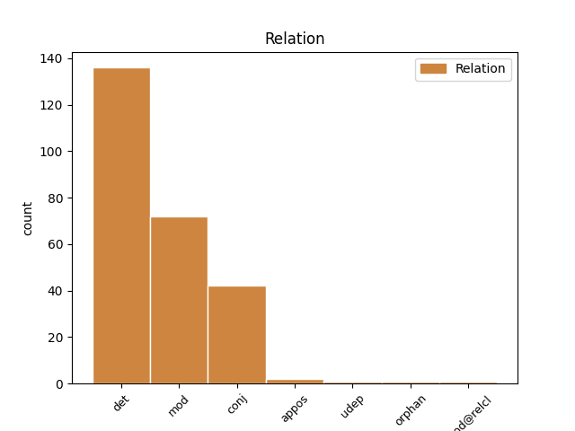
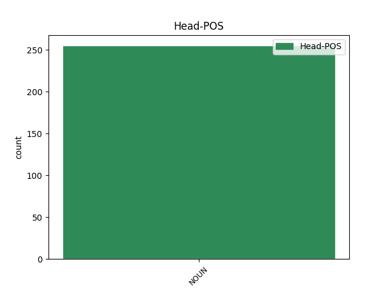
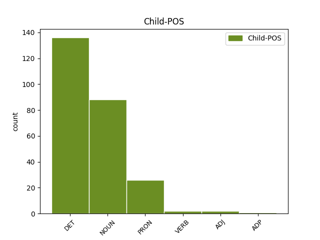

Distribution of features within this leaf



Agreement Rules sorted by frequency.
- When the dependent token is the determiner(det) of the head token, and the head token is NOUN and the dependent token is DET.
1 Jabet _ _ _ _ 0 _ _ _
2 1 _ _ _ _ 0 _ _ _
3 , _ _ _ _ 0 _ _ _
4 tuddees _ _ _ _ 0 _ _ _
5 na _ _ _ _ 0 _ _ _
6 ko _ _ _ _ 0 _ _ _
7 yitam _ _ _ _ 0 _ _ _
8 jabetu _ _ _ _ 0 _ _ _
9 ndaw _ _ _ _ 0 _ _ _
10 ( _ _ _ _ 0 _ _ _
11 diabète _ _ _ _ 0 _ _ _
12 juvénile _ _ _ _ 0 _ _ _
13 ) _ _ _ _ 0 _ _ _
14 , _ _ _ _ 0 _ _ _
15 ndax _ _ _ _ 0 _ _ _
16 li _ _ _ _ 0 _ _ _
17 mu _ _ _ _ 0 _ _ _
18 di _ _ _ _ 0 _ _ _
19 dal _ _ _ _ 0 _ _ _
20 nit _ _ _ _ 0 _ _ _
21 ki _ _ _ _ 0 _ _ _
22 ci _ _ _ _ 0 _ _ _
23 ag ab DET DET Definite=Ind|NounClass=Wol3|Number=Sing|PronType=Art 24 det _ _
24 ndawam ndaw NOUN NOUN Number=Sing|Poss=Yes 0 _ _ _
25 , _ _ _ _ 0 _ _ _
26 diggante _ _ _ _ 0 _ _ _
27 ba _ _ _ _ 0 _ _ _
28 mu _ _ _ _ 0 _ _ _
29 amee _ _ _ _ 0 _ _ _
30 ay _ _ _ _ 0 _ _ _
31 weer _ _ _ _ 0 _ _ _
32 ba _ _ _ _ 0 _ _ _
33 35 _ _ _ _ 0 _ _ _
34 at _ _ _ _ 0 _ _ _
35 . _ _ _ _ 0 _ _ _
1 Mu _ _ _ _ 0 _ _ _
2 a _ _ _ _ 0 _ _ _
3 tax _ _ _ _ 0 _ _ _
4 Muusaa _ _ _ _ 0 _ _ _
5 ne _ _ _ _ 0 _ _ _
6 : _ _ _ _ 0 _ _ _
7 Waalo _ _ _ _ 0 _ _ _
8 a _ _ _ _ 0 _ _ _
9 ngi _ _ _ _ 0 _ _ _
10 di _ _ _ _ 0 _ _ _
11 wal-wali _ _ _ _ 0 _ _ _
12 di _ _ _ _ 0 _ _ _
13 gental _ _ _ _ 0 _ _ _
14 Waalo _ _ _ _ 0 _ _ _
15 , _ _ _ _ 0 _ _ _
16 ngir _ _ _ _ 0 _ _ _
17 bëgg _ _ _ _ 0 _ _ _
18 naani _ _ _ _ 0 _ _ _
19 géejag géej NOUN NOUN Case=Gen|Number=Sing 0 _ _ _
20 doomu doom NOUN NOUN Case=Gen|Number=Sing 19 mod _ _
21 Asta _ _ _ _ 0 _ _ _
22 Waalo _ _ _ _ 0 _ _ _
23 . _ _ _ _ 0 _ _ _
1 Yelloo _ _ _ _ 0 _ _ _
2 na _ _ _ _ 0 _ _ _
3 ñu _ _ _ _ 0 _ _ _
4 jox _ _ _ _ 0 _ _ _
5 ko _ _ _ _ 0 _ _ _
6 ci _ _ _ _ 0 _ _ _
7 wàllu _ _ _ _ 0 _ _ _
8 koom _ _ _ _ 0 _ _ _
9 , _ _ _ _ 0 _ _ _
10 nekkin _ _ _ _ 0 _ _ _
11 , _ _ _ _ 0 _ _ _
12 caada _ _ _ _ 0 _ _ _
13 , _ _ _ _ 0 _ _ _
14 sañ-sañ _ _ _ _ 0 _ _ _
15 yi _ _ _ _ 0 _ _ _
16 darajaam _ _ _ _ 0 _ _ _
17 ak _ _ _ _ 0 _ _ _
18 yokkuteg _ _ _ _ 0 _ _ _
19 jëmmam _ _ _ _ 0 _ _ _
20 laaj _ _ _ _ 0 _ _ _
21 , _ _ _ _ 0 _ _ _
22 ci _ _ _ _ 0 _ _ _
23 liggéeyub liggéey NOUN NOUN Case=Gen|Number=Sing 0 _ _ _
24 réewam _ _ _ _ 0 _ _ _
25 ak _ _ _ _ 0 _ _ _
26 jëflanteg jëflante NOUN NOUN Case=Gen|Number=Sing 23 conj _ _
27 réew _ _ _ _ 0 _ _ _
28 ak _ _ _ _ 0 _ _ _
29 réew _ _ _ _ 0 _ _ _
30 , _ _ _ _ 0 _ _ _
31 lépp _ _ _ _ 0 _ _ _
32 nag _ _ _ _ 0 _ _ _
33 aju _ _ _ _ 0 _ _ _
34 ci _ _ _ _ 0 _ _ _
35 doxalinu _ _ _ _ 0 _ _ _
36 réew _ _ _ _ 0 _ _ _
37 mu _ _ _ _ 0 _ _ _
38 ne _ _ _ _ 0 _ _ _
39 , _ _ _ _ 0 _ _ _
40 ak _ _ _ _ 0 _ _ _
41 ci _ _ _ _ 0 _ _ _
42 alalam _ _ _ _ 0 _ _ _
43 . _ _ _ _ 0 _ _ _
1 Bëgg-bëggu _ _ _ _ 0 _ _ _
2 askan _ _ _ _ 0 _ _ _
3 wi _ _ _ _ 0 _ _ _
4 mu _ _ _ _ 0 _ _ _
5 a _ _ _ _ 0 _ _ _
6 di _ _ _ _ 0 _ _ _
7 kenu ken NOUN NOUN Case=Gen|Number=Sing 0 _ _ _
8 li bi PRON PRON Definite=Def|Deixis=Prox|NounClass=Wol7|Number=Sing|PronType=Rel 7 mod _ _
9 téye _ _ _ _ 0 _ _ _
10 baatu _ _ _ _ 0 _ _ _
11 nguur _ _ _ _ 0 _ _ _
12 gi _ _ _ _ 0 _ _ _
13 ; _ _ _ _ 0 _ _ _
1 Am _ _ _ _ 0 _ _ _
2 na _ _ _ _ 0 _ _ _
3 yeneen _ _ _ _ 0 _ _ _
4 tomb _ _ _ _ 0 _ _ _
5 yu _ _ _ _ 0 _ _ _
6 ñu _ _ _ _ 0 _ _ _
7 bokk _ _ _ _ 0 _ _ _
8 ci _ _ _ _ 0 _ _ _
9 diggante _ _ _ _ 0 _ _ _
10 Isipt _ _ _ _ 0 _ _ _
11 gu _ _ _ _ 0 _ _ _
12 yàgg _ _ _ _ 0 _ _ _
13 ga _ _ _ _ 0 _ _ _
14 ak _ _ _ _ 0 _ _ _
15 Afriq _ _ _ _ 0 _ _ _
16 gu _ _ _ _ 0 _ _ _
17 ñuul _ _ _ _ 0 _ _ _
18 gi _ _ _ _ 0 _ _ _
19 : _ _ _ _ 0 _ _ _
20 Am _ _ _ _ 0 _ _ _
21 col _ _ _ _ 0 _ _ _
22 ak _ _ _ _ 0 _ _ _
23 watuwiin _ _ _ _ 0 _ _ _
24 , _ _ _ _ 0 _ _ _
25 ak _ _ _ _ 0 _ _ _
26 topptoowiinu topptoowiin NOUN NOUN Case=Gen|Number=Sing 0 _ _ _
27 kër _ _ _ _ 0 _ _ _
28 ak _ _ _ _ 0 _ _ _
29 yenn benn PRON PRON NounClass=Wol8|Number=Sing|PronType=Ind,Neg 26 conj _ _
30 ci _ _ _ _ 0 _ _ _
31 ay _ _ _ _ 0 _ _ _
32 gëm-gëm _ _ _ _ 0 _ _ _
33 ak _ _ _ _ 0 _ _ _
34 i _ _ _ _ 0 _ _ _
35 jaamuwiin _ _ _ _ 0 _ _ _
36 . _ _ _ _ 0 _ _ _
1 Jabet _ _ _ _ 0 _ _ _
2 1 _ _ _ _ 0 _ _ _
3 , _ _ _ _ 0 _ _ _
4 tuddees _ _ _ _ 0 _ _ _
5 na _ _ _ _ 0 _ _ _
6 ko _ _ _ _ 0 _ _ _
7 yitam _ _ _ _ 0 _ _ _
8 jabetu jabet NOUN NOUN Case=Gen|Number=Sing 0 _ _ _
9 ndaw _ _ _ _ 0 _ _ _
10 ( _ _ _ _ 0 _ _ _
11 diabète diabète NOUN NOUN Gender=Masc|Number=Sing 8 appos _ _
12 juvénile _ _ _ _ 0 _ _ _
13 ) _ _ _ _ 0 _ _ _
14 , _ _ _ _ 0 _ _ _
15 ndax _ _ _ _ 0 _ _ _
16 li _ _ _ _ 0 _ _ _
17 mu _ _ _ _ 0 _ _ _
18 di _ _ _ _ 0 _ _ _
19 dal _ _ _ _ 0 _ _ _
20 nit _ _ _ _ 0 _ _ _
21 ki _ _ _ _ 0 _ _ _
22 ci _ _ _ _ 0 _ _ _
23 ag _ _ _ _ 0 _ _ _
24 ndawam _ _ _ _ 0 _ _ _
25 , _ _ _ _ 0 _ _ _
26 diggante _ _ _ _ 0 _ _ _
27 ba _ _ _ _ 0 _ _ _
28 mu _ _ _ _ 0 _ _ _
29 amee _ _ _ _ 0 _ _ _
30 ay _ _ _ _ 0 _ _ _
31 weer _ _ _ _ 0 _ _ _
32 ba _ _ _ _ 0 _ _ _
33 35 _ _ _ _ 0 _ _ _
34 at _ _ _ _ 0 _ _ _
35 . _ _ _ _ 0 _ _ _
1 Mu _ _ _ _ 0 _ _ _
2 jaar _ _ _ _ 0 _ _ _
3 ci _ _ _ _ 0 _ _ _
4 yoon _ _ _ _ 0 _ _ _
5 yi _ _ _ _ 0 _ _ _
6 penccum-réew _ _ _ _ 0 _ _ _
7 mi _ _ _ _ 0 _ _ _
8 walla _ _ _ _ 0 _ _ _
9 " _ _ _ _ 0 _ _ _
10 Assises Assises NOUN NOUN Gender=Fem|Number=Plur 0 _ _ _
11 Nationales Nationales ADJ ADJ Gender=Fem|Number=Plur 10 mod _ SpaceAfter=No
12 " _ _ _ _ 0 _ _ _
13 yi _ _ _ _ 0 _ _ _
14 xàlloon _ _ _ _ 0 _ _ _
15 ! _ _ _ _ 0 _ _ _
1 Loolu _ _ _ _ 0 _ _ _
2 mu _ _ _ _ 0 _ _ _
3 a _ _ _ _ 0 _ _ _
4 di _ _ _ _ 0 _ _ _
5 tàyyi _ _ _ _ 0 _ _ _
6 xayug xay NOUN NOUN Case=Gen|Number=Sing 0 _ _ _
7 sowwu _ _ _ _ 0 _ _ _
8 gu gu ADP PREP NounClass=Wol3|Number=Sing|Person=3 6 udep _ _
9 Nasaraan _ _ _ _ 0 _ _ _
10 ak _ _ _ _ 0 _ _ _
11 Yahood _ _ _ _ 0 _ _ _
12 gi _ _ _ _ 0 _ _ _
13 ( _ _ _ _ 0 _ _ _
14 judeo-chretienne _ _ _ _ 0 _ _ _
15 ) _ _ _ _ 0 _ _ _
16 tay _ _ _ _ 0 _ _ _
17 ko _ _ _ _ 0 _ _ _
18 ci _ _ _ _ 0 _ _ _
19 réew _ _ _ _ 0 _ _ _
20 mu _ _ _ _ 0 _ _ _
21 nga _ _ _ _ 0 _ _ _
22 xam _ _ _ _ 0 _ _ _
23 ne _ _ _ _ 0 _ _ _
24 ay _ _ _ _ 0 _ _ _
25 jullit _ _ _ _ 0 _ _ _
26 lañu _ _ _ _ 0 _ _ _
27 mbaa _ _ _ _ 0 _ _ _
28 duñu _ _ _ _ 0 _ _ _
29 woon _ _ _ _ 0 _ _ _
30 i _ _ _ _ 0 _ _ _
31 ñoñ _ _ _ _ 0 _ _ _
32 sowwu _ _ _ _ 0 _ _ _
33 , _ _ _ _ 0 _ _ _
34 ak _ _ _ _ 0 _ _ _
35 ga _ _ _ _ 0 _ _ _
36 leen _ _ _ _ 0 _ _ _
37 ci _ _ _ _ 0 _ _ _
38 ñu _ _ _ _ 0 _ _ _
39 gën _ _ _ _ 0 _ _ _
40 a _ _ _ _ 0 _ _ _
41 doon _ _ _ _ 0 _ _ _
42 i _ _ _ _ 0 _ _ _
43 tubaab _ _ _ _ 0 _ _ _
44 tubaab _ _ _ _ 0 _ _ _
45 yi _ _ _ _ 0 _ _ _
46 . _ _ _ _ 0 _ _ _
1 Kon _ _ _ _ 0 _ _ _
2 téy _ _ _ _ 0 _ _ _
3 su _ _ _ _ 0 _ _ _
4 ñu _ _ _ _ 0 _ _ _
5 naan _ _ _ _ 0 _ _ _
6 caada _ _ _ _ 0 _ _ _
7 Afrik _ _ _ _ 0 _ _ _
8 yi _ _ _ _ 0 _ _ _
9 ay _ _ _ _ 0 _ _ _
10 " _ _ _ _ 0 _ _ _
11 civilisations civilisations NOUN NOUN Gender=Fem|Number=Plur 0 _ _ _
12 orales _ _ _ _ 0 _ _ _
13 " _ _ _ _ 0 _ _ _
14 lañu _ _ _ _ 0 _ _ _
15 , _ _ _ _ 0 _ _ _
16 cosaanoowuñu cosaanoo VERB VERB Mood=Ind|Number=Plur|Person=3|Polarity=Neg|VerbForm=Fin 11 conj _ _
17 bind _ _ _ _ 0 _ _ _
18 , _ _ _ _ 0 _ _ _
19 da _ _ _ _ 0 _ _ _
20 ñu _ _ _ _ 0 _ _ _
21 di _ _ _ _ 0 _ _ _
22 wax _ _ _ _ 0 _ _ _
23 rekk _ _ _ _ 0 _ _ _
24 , _ _ _ _ 0 _ _ _
25 wante _ _ _ _ 0 _ _ _
26 lenn _ _ _ _ 0 _ _ _
27 lu _ _ _ _ 0 _ _ _
28 wér _ _ _ _ 0 _ _ _
29 lalu _ _ _ _ 0 _ _ _
30 ko _ _ _ _ 0 _ _ _
31 ! _ _ _ _ 0 _ _ _
Disagree Examples:
1 Amari _ _ _ _ 0 _ _ _
2 Ngone _ _ _ _ 0 _ _ _
3 dem _ _ _ _ 0 _ _ _
4 na _ _ _ _ 0 _ _ _
5 Bawol _ _ _ _ 0 _ _ _
6 ak _ _ _ _ 0 _ _ _
7 ay ab DET DET Definite=Ind|NounClass=Wol8|Number=Plur|PronType=Art 8 det _ _
8 jàmbaaram jàmbaar NOUN NOUN Number=Sing|Poss=Yes 0 _ _ _
9 , _ _ _ _ 0 _ _ _
10 nangu _ _ _ _ 0 _ _ _
11 reew _ _ _ _ 0 _ _ _
12 moomu _ _ _ _ 0 _ _ _
13 . _ _ _ _ 0 _ _ _
1 Ci _ _ _ _ 0 _ _ _
2 lu _ _ _ _ 0 _ _ _
3 jiitu _ _ _ _ 0 _ _ _
4 ñëwug _ _ _ _ 0 _ _ _
5 tubaab _ _ _ _ 0 _ _ _
6 yi _ _ _ _ 0 _ _ _
7 , _ _ _ _ 0 _ _ _
8 Kajoor _ _ _ _ 0 _ _ _
9 doonoon _ _ _ _ 0 _ _ _
10 na _ _ _ _ 0 _ _ _
11 nguur _ _ _ _ 0 _ _ _
12 gu _ _ _ _ 0 _ _ _
13 ay ab DET DET Definite=Ind|NounClass=Wol8|Number=Plur|PronType=Art 14 det _ _
14 am-amam am-am NOUN NOUN Number=Sing|Poss=Yes 0 _ _ _
15 newoon _ _ _ _ 0 _ _ _
16 gàññ _ _ _ _ 0 _ _ _
17 . _ _ _ _ 0 _ _ _
1 Ñu _ _ _ _ 0 _ _ _
2 tegoon _ _ _ _ 0 _ _ _
3 ca _ _ _ _ 0 _ _ _
4 kaw _ _ _ _ 0 _ _ _
5 gor _ _ _ _ 0 _ _ _
6 ña _ _ _ _ 0 _ _ _
7 ay _ _ _ _ 0 _ _ _
8 njotti njott NOUN NOUN Case=Gen|Number=Plur 0 _ _ _
9 bopp _ _ _ _ 0 _ _ _
10 yu _ _ _ _ 0 _ _ _
11 kenn _ _ _ _ 0 _ _ _
12 àttanul àttan VERB VERB Mood=Ind|Number=Sing|Person=3|Polarity=Neg|VerbForm=Fin 8 mod@relcl _ SpaceAfter=No
13 . _ _ _ _ 0 _ _ _
1 Moom _ _ _ _ 0 _ _ _
2 mu _ _ _ _ 0 _ _ _
3 a _ _ _ _ 0 _ _ _
4 di _ _ _ _ 0 _ _ _
5 wax _ _ _ _ 0 _ _ _
6 ci _ _ _ _ 0 _ _ _
7 turu _ _ _ _ 0 _ _ _
8 buur _ _ _ _ 0 _ _ _
9 bi _ _ _ _ 0 _ _ _
10 ak _ _ _ _ 0 _ _ _
11 njiitu njiit NOUN NOUN Case=Gen|Number=Sing 0 _ _ _
12 ñi bi PRON PRON Definite=Def|Deixis=Prox|NounClass=Wol2|Number=Plur|Person=3|PronType=Rel 11 mod _ _
13 yor _ _ _ _ 0 _ _ _
14 baxan _ _ _ _ 0 _ _ _
15 buur _ _ _ _ 0 _ _ _
16 te _ _ _ _ 0 _ _ _
17 mu _ _ _ _ 0 _ _ _
18 gën _ _ _ _ 0 _ _ _
19 a _ _ _ _ 0 _ _ _
20 siiwe _ _ _ _ 0 _ _ _
21 ci _ _ _ _ 0 _ _ _
22 Baadi _ _ _ _ 0 _ _ _
23 ak _ _ _ _ 0 _ _ _
24 taawub _ _ _ _ 0 _ _ _
25 buur _ _ _ _ 0 _ _ _
26 . _ _ _ _ 0 _ _ _
1 Baadi _ _ _ _ 0 _ _ _
2 moom _ _ _ _ 0 _ _ _
3 mu _ _ _ _ 0 _ _ _
4 a _ _ _ _ 0 _ _ _
5 di _ _ _ _ 0 _ _ _
6 njiitu njiit NOUN NOUN Case=Gen|Number=Sing 0 _ _ _
7 doomi doom NOUN NOUN Case=Gen|Number=Plur 6 mod _ _
8 buur _ _ _ _ 0 _ _ _
9 bi _ _ _ _ 0 _ _ _
10 , _ _ _ _ 0 _ _ _
11 ak _ _ _ _ 0 _ _ _
12 yenn _ _ _ _ 0 _ _ _
13 ci _ _ _ _ 0 _ _ _
14 jëwriñ _ _ _ _ 0 _ _ _
15 yi _ _ _ _ 0 _ _ _
16 . _ _ _ _ 0 _ _ _